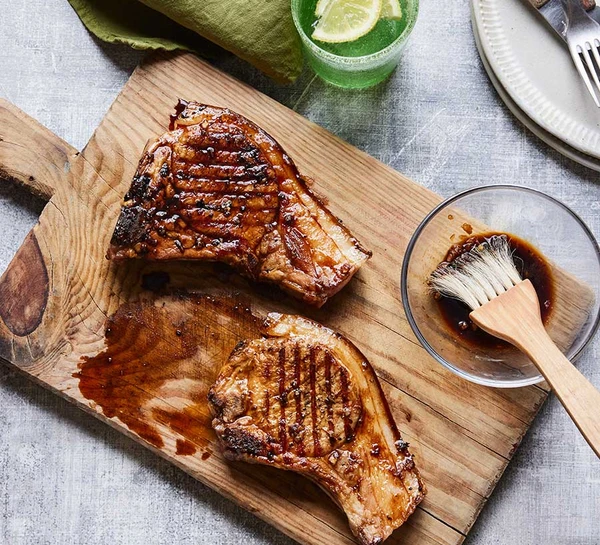

Home
Honey and Garlic Pork Chops Recipe

Quick and easy honey & garlic pork chops
Need an easy dinner midweek? You can prep these speedy chops using storecupboard ingredients in just 5 mins and cook them in 10
Ingredients
- 2 tbsp honey
- 1 tbsp soy sauce
- 1 tsp rice vinegar
- 3 garlic cloves finely chopped then crushed
- 1 tbsp vegetable oil
- 1 tbsp unsalted butter melted
- 2 pork chops
- a small handful of fresh parsley to serve (optional)
Steps
- Combine the honey, soy, rice vinegar and garlic in a small bowl. Mix the oil and butter in another bowl.
- Heat a griddle pan over a high heat until searing hot. Brush the pork chops all over with the oil and butter mixture, season, then cook for 4-6 mins, turning halfway, until cooked through.
- Lift the pork out of the pan and onto a plate using tongs, then brush the honey mixture over both sides and return to the pan to cook for a further minute on each side.
- Rest the chops for a couple of minutes, then drizzle over any juices from the pan to serve. Sprinkle with the parsley to finish, if you like.